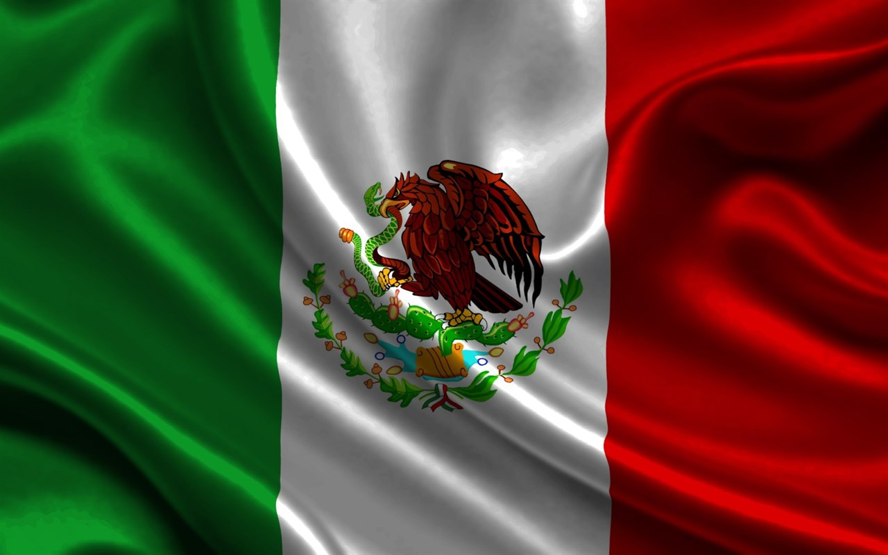

Fill out name and email to hear more about Mexican Cuisine!
Mexican Cuisine

Mexican Flag Meaning
- The green stripe on the Mexican flag represents the Independence Movement.
- The white stripe represents the purity of the Catholic faith
- The red stripe represents the Spaniards that joined in the quest for Independence and the blood of the national heroes.
History of Mexican Cuisine
The history of Mexican food is a long and diverse one. It is believed that authentic Mexican food might have been derived from the Mayan Indians. In the mid 1300's, The Aztec Empire was thriving, and though the Mayan food staples were still in use, chili peppers, honey, salt and chocolate found its way into their cooking. In 1521 Spain invaded Mexico. Spanish foods had the most influence on the Mexican cuisine. They introduced new livestock, such as sheep, pigs and cows. They brought with them dairy products, and garlic as well as many different herbs, wheat and spices. Some iconic Mexican foods and some fun facts about them are below!
Tacos
- Tacos were invented between 1000 and 500 B.C.
- National Taco Day is October 4th
- Americans eat roughly 4.5 billion tacos every year
Burritos
- The burrito first appeared in Mexico in the Early 1900's
- Burrito means "little donkey" in Spanish
- The largest burrito weighed 12,785.576 lbs
Enchiladas
- The enchilada is one of the foods mentioned in Mexico's first cookbook in 1831
- May 5th is National Enchilada Day in addition to Cinco de Mayo
- The word enchilada comes from the Spanish word "enchilar" that translates to "to add chile pepper to"
Guacamole
- Guacamole originated in Mexico in the 1300's
- In 1871, the first avocado tree was planted in California
- Today California supplies almost 90% of the U.S. supply of avocados